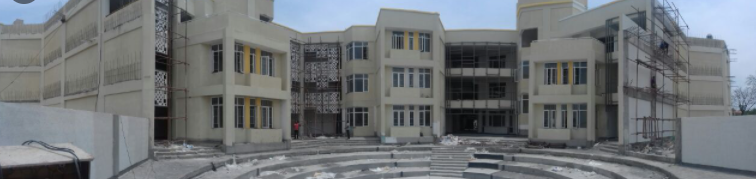

|  | |||
Welcome to KC High |
|||
| Pre Prep | Primary School | Middle School | High School |
| At the Pre-Prep level, the special bond between parent and child is nurtured by providing a stimulating environment for both the parent and the child to learn together as they explore the world through their senses. | At the Cambridge Primary level, the school offers a wide range of subjects, viz., Language Arts, with English as a First Language and a choice of Tamil, Hindi or Spanish as Second Language, Mathematics, Science, Social Studies. | At the Cambridge Secondary 1 level too we offer a wide range of subjects, viz., Language Arts, with English as a First Language and a choice of Tamil, Hindi or Spanish as Second Language, Information and Communication Technology, Art. | Besides being the most popular international qualifications worldwide for 14 to 16 year olds, IGCSE subject curricula develops skills of communication, creativity, enquiry, research and problem solving. |
|
OUR MISSION at KC High International school is to provide a joyful and challenging learning environment that caters to a diverse student population and fosters a connect with nature and culture, through a team of caring and potential facilitators |
|||